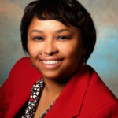
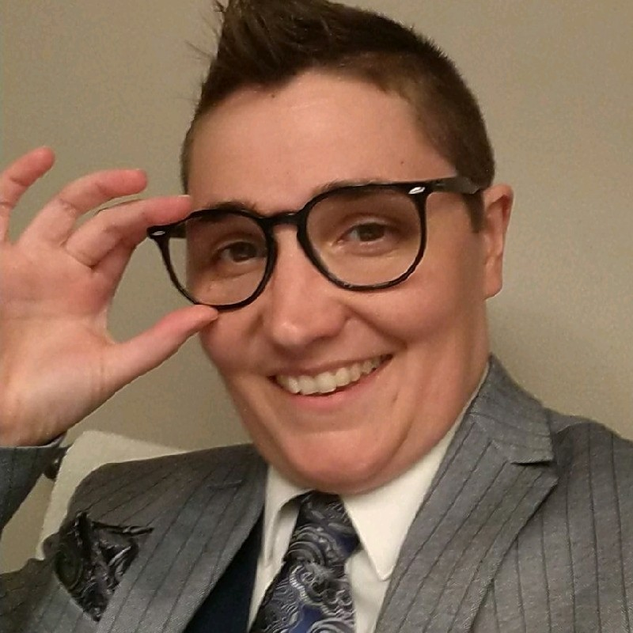
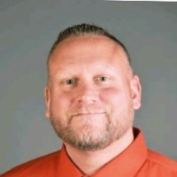
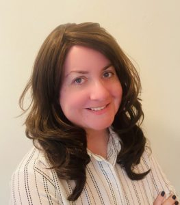
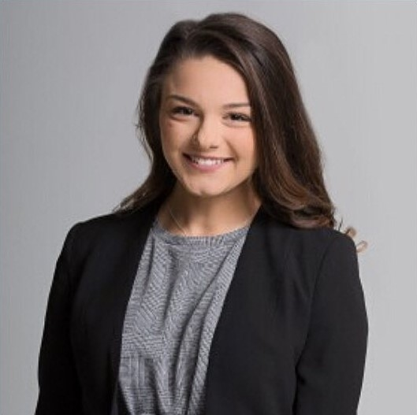
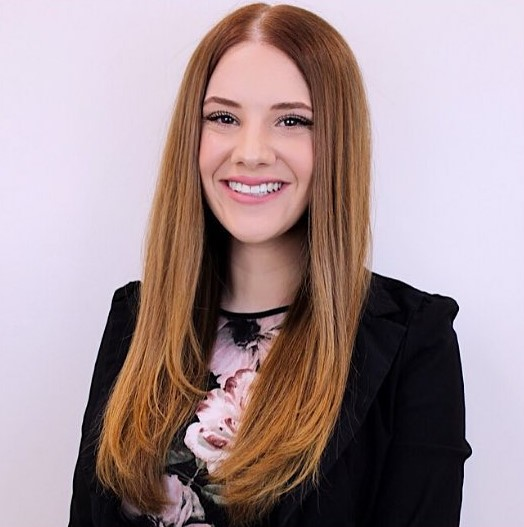

Board of Directors
President, Rebekah Bundesen, MSA, LBBH, CPHQ
Rebekah is a nationally recognized healthcare quality expert serving as a Director-At-Large on the MAHQ Board. As the Chairperson of the Communications and Membership Committees, her task is to provide industry updates and MAHQ information to members, and increase the organization’s membership in a variety of ways. Currently, Rebekah is employed as a Senior Provider Performance Specialist for Priority Health where she regularly interacts with executive leadership at many provider organizations. Additionally, she serves as an Adjunct Professor teaching healthcare concentration courses. She developed two popular and successful university courses for the educational institution at which she works: Introduction to Health Policy, and Management of Quality Improvement and Outcomes. Rebekah holds a Master of the Science of Administration in Health Services degree, a Lean Six Sigma Black Belt in Healthcare, and a CPHQ credential as well. She also wrote content for the National Association for Healthcare Quality’s HQ Principles, and has served as a Team Leader for the NAHQ Quality Review and Accountability Work Group.
President-Elect, Michelle Bryant, RN, BSN, MBA, CPHQ
Michelle Bryant holds the position of Secretary on the MAHQ Board. She is an accomplished health care professional with more than 20 years of clinical and non-clinical leadership experience. She has earned an RN and BSN, as well as a Master of Business Administration degree, and her CPHQ credential. She has worked as a military officer, clinician, healthcare executive, consultant and advocate for quality healthcare. She is well-known throughout the healthcare industry for her expertise in population health, performance improvement, accreditation and regulatory agency compliance. Currently based out of Lake Orion, Michigan, Ms. Bryant has extensive experience working as, and with C-level executives, physicians, and payors across multiple organizations.
Past President, Diane Sypien, RN, BSN, MSA, PMP
MAHQ is proud to have Diane Sypien as its Past President. In the past, Diane has served as the Secretary and President-Elect, and has had an active role in Annual Meeting/Conference planning as well. Not only is she an RN holding a Bachelor in Nursing degree, she is also a Project Management Professional, and holds a Master of the Science of Administration in Health Services degree. Diane’s education and experience position her to understand healthcare quality from both a clinical and business standpoint. Diane is known for her expertise in Medicare Advantage Quality Improvement, Utilization Management and Compliance. Diane’s current employment is with Emergent Holdings, Senior Health Services Division, as the Manager of Clinical Programs and Oversight. Diane’s leadership is furthering MAHQ’s progress in becoming a significant Michigan healthcare quality resource.
Secretary, Julie Janeway, MSA, JD, ABD/PhD
Julie supports the organization as a Director-at-Large on the MAHQ Board of Directors. She also serves as the Chairperson of the Advocacy Committee, and does substantial work on the Education Committee, and Annual Meeting/Conference planning subcommittee. Julie holds a Bachelor of Business Administration, a Master of the Science of Administration in Health Services, and Juris Doctorate degrees, and her PhD program is in Public Policy and Administration. Julie is a retired Professor of Law and Healthcare Administration in the Master and Doctoral Healthcare Administration programs at CMU, and a Professor of Health and Business/Corporate Law at WMU Law School. With an extensive and varied background as a healthcare consultant specializing in risk management, compliance, fraud prevention, and patient education training for practitioners, among other things, Julie brings a diverse body of practical experience to MAHQ. Her experience in health law and administration, as well as a variety of other areas of law, results in a very different perspective than that of many members, but one that fully supports the work of quality professionals in all areas of healthcare.
Treasurer, Linda Weirauch, RN, BSN, MSN, CPHQ, LGBH
Linda supports the mission of MAHQ by serving as the Past President Director-at-Large and the Treasurer and being a go-to resource in the field of healthcare quality. In addition, she teaches a five-star rated CPHQ course, a fact other states have taken advantage of too, flying her out to teach their courses. For the past eight years, her course has led many healthcare quality professionals to pursue their CPHQ certification and further their own career goals. Linda is currently employed as the Director of Quality Management and Infection Control at Select Specialty Hospital in Flint, where she has led efforts that have improved patients’ quality outcomes. She proudly serves as the Commissioner for the Awards Team for the National Association for Healthcare Quality and was recently re-appointed as a Peer Reviewer for The Journal of Healthcare Quality. Linda has presented quality and clinical topics at several national conferences as well as authored two chapters for the Lippincott Advisor Quality Improvement Navigator. She holds a Master of Science in Nursing and is a Certified Professional in Healthcare Quality. Linda also obtained her green belt certification in Lean Six Sigma – Healthcare. She has dedicated years of volunteer service to MAHQ having held numerous roles on the MAHQ Board, including as President more than once. Linda has been and continues to be an invaluable resource for the Board members and the membership at large.
Director-At-Large, Jay Adrianse, MSN, BSN, RN
Jay Knight is a Doctoral Candidate in Nursing Leadership and Education, holds a Master of the Science of Nursing degree with an emphasis in health informatics, a Bachelor degree in Nursing, and holds Epic Clinical Informatics and Epic Hospitalist Trainer Certifications. They have background in trauma, stroke, hemodialysis, and hematology/oncology. Jay also serves as an adjunct professor at Montcalm Community College’s School of Nursing. They are a highly experienced educator both inside and outside the traditional classroom, and have designed and delivered several LGBTQ+ educational lectures meant to address health disparities and inequities faced by this community. They have led system wide changes in advancing healthcare quality, including leading many concurrent programs specifically focused on improved quality outcomes and patient safety . This includes being the principle project leader for the sexual orientation and gender identity implementation at Spectrum Health. Jay acted to pull together and lead teams to design education, create standard work, and write scripts necessary to test functionality within the electronic health record. Their strengths include the ability to design effective communication and educational materials to promote adoption and implementation of new workflows and care practices. They are an experienced change manager and are confident asking the hard questions to positively impact outcomes of a project. Jay is a healthcare advocate and experienced nurse, and delivering quality care is a primary focus as they seek to address health disparities and inequities. Jay is seeking a position from which they can effectively advocate for and implement positive changes that drive positive healthcare outcomes and experiences for patients and the healthcare team. They would like to see MAHQ take a leadership role in addressing health disparities faced by the LGBTQ+ community. Jay would also like to see MAHQ help to address these disparities by acting as a leader in educational and best practice offerings for healthcare organizations seeking to make a difference.
Glenn Houck, MSM, RT(R)
Glenn is the Clinical Operations Director for the Department of Radiology at Michigan Medicine. Glenn is an accomplished medical professional with 23 years’ experience in leadership and diagnostic imaging. Glenn’s healthcare management experience includes operational management, human resources, and administrative expertise. He is highly skilled in the delivery of healthcare services and the advancement of workplace technology. Glenn has notable success in shaping departmental visions and implementing sophisticated strategies to drive profitability and departmental growth. He has a strong reputation for creating a teamwork driven environment focusing on relationship building and communication. Glenn is involved in many other committees which focus on care, quality and safety. He is also a Gulf War Veteran with an Honorable Discharge from the U.S Army. Glenn’s educational background includes a Master of Science in Management with a focus on Information Technology from Purdue University Global.
Anushalie Dias Weerasinha, BA, JD
Anushalie holds a bachelor’s degree in psychology, earned her law degree with an emphasis in health law compliance, and was admitted to the practice of law in Michigan in 2018. Currently Anushalie works at Michigan Medicine where she assists in developing and implementing processes to facilitate compliance with TJC, Michigan Medicine, and various department policies, forecasts inventory needs for future medical supplies, ensures integrity in data/billing, and serves as a resource to multiple departments in the resolution of complex problems and issues. Anushalie is committed to quality improvement in all areas and departments of healthcare, and is interested in pursuing her CPHQ credential. She is highly motivated, and has an ability to work collaboratively and diplomatically with individuals from all levels of an organization. She is committed to serve as a member of the Board of Directors in any capacity.
Jennifer Woodrum, BS, RHIT
Jennifer is a recent graduate from Schoolcraft College with an associate degree in Health Information Technology. She recently earned her RHIT credential and is interested in obtaining the CPHQ credential this summer. She completed an internship at St. Mary Mercy Hospital in Livonia, MI in the Health Information Management and Quality Departments. She is interested in working with the Michigan Collaborative Quality Initiatives.
Alyssa Spiteri, BS
Alyssa is a recent graduate from Grand Valley State University, earning her Bachelors Degree in Health Information Management with a minor in Health Information Systems. She will be testing for her RHIA and CPHQ credentials following the COVID-19 crisis. She interned at the Orthopedic Associates of Michigan Surgery Center, in Grand Rapids, MI. Alyssa serves as the Vice Chair for the MAHQ Communications Committee, and Education Committee. She is highly interested in pursuing a career in Quality Improvement and Health Administration. She is currently applying to different Universities to begin her Master’s education this fall!
Ivy Oma, BS
Ivy is a recent graduate from Grand Valley State University earning a Bachelor's Degree in Health Information Management and a minor in Health Information Systems. She is currently working towards testing for her #RHIA and #CPHQ credentials. Ivy has recently completed an internship in the Health Information Management department at Michigan Medicine in Ann Arbor, MI. She currently serves as a Vice Chair for the Membership Committee, a Vice Chair for the Quality Improvement Project Subcommittee, and an Education Committee Member. She looks forward to pursuing her career in the areas of Quality Improvement, Healthcare Administration, or Health IT while actively engaging in MAHQ!
